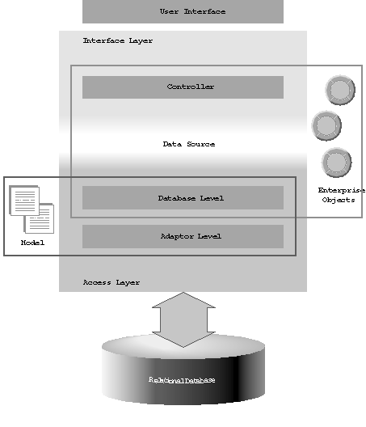
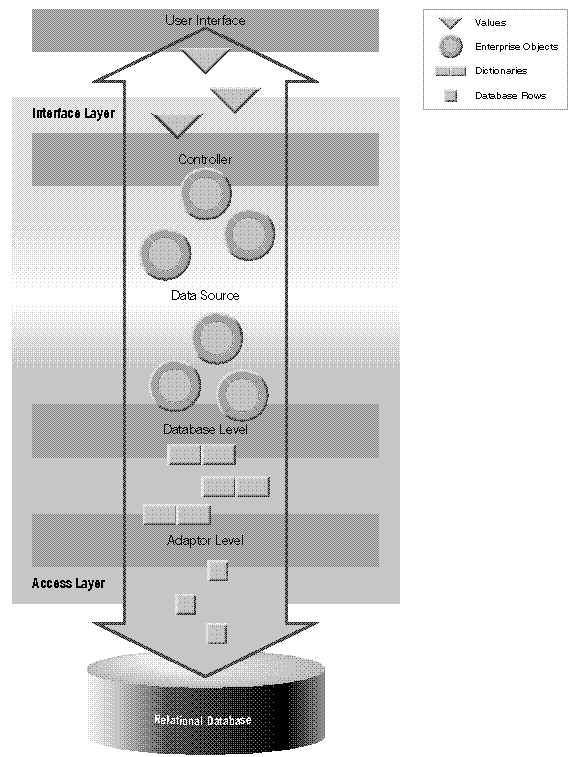
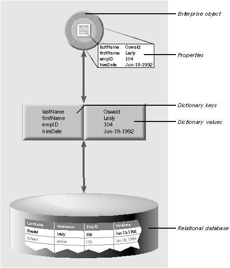
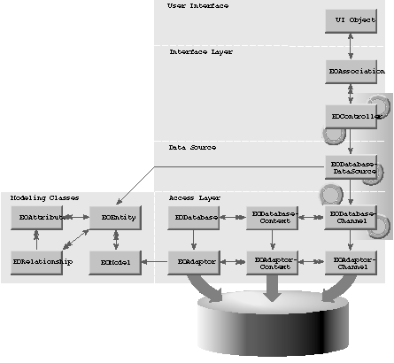
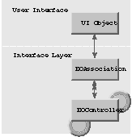
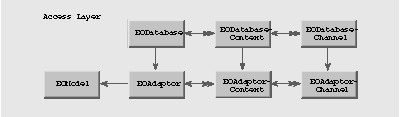
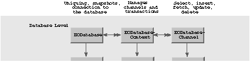
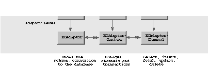
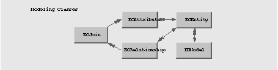

Enterprise Objects Framework Release 1.1 Copyright ©1995 by NeXT Computer, Inc. All Rights Reserved.
| 1 |
Enterprise Objects Framework Overview
| The Enterprise Objects Framework is a set of tools and resources that helps you create applications that work with most popular relational databases--or with your own custom data store. These tools don't help you build a complete database system from the ground up--the tasks of data storage and retrieval are left to a database server supplied by a third party. Rather, the Enterprise Objects Framework lets you design database applications that are easy to build and maintain, that can communicate with other applications, and that draw upon the standard interface features common to all NEXTSTEP applications.
Assuming your data store is a relational database, creating an Enterprise Objects Framework application usually involves the following: |
| A database server and an adaptor for that server. An adaptor is a mechanism that connects your application to a particular server. For each type of server you use, you need a separate adaptor. The Enterprise Objects Framework provides adaptors for Oracle and Sybase servers. | ||
| A model. A model defines the mapping between your enterprise objects and the server's data; models are most often built graphically using the EOModeler application. | ||
| The EOPalette. The EOPalette, used by Interface Builder, gives you access to the user interface objects that are provided by the Framework. | ||
| The Enterprise Objects Framework libraries of classes and protocols. The classes and protocols provided by the Framework let you programmatically manipulate data as it passes between the server, your objects, and the user interface. Although simple applications can be created entirely in Interface Builder, sophisticated applications will require some use of the Enterprise Objects Framework classes in your own code. |
| Enterprise Objects Framework |
| The architecture of the Framework is divided into two major layers, the interface layer and the access layer, as shown in Figure 1.
The interface layer provides a standard mechanism for displaying data, while the access layer creates enterprise objects from a relational database. These two layers are connected by a data source, which supplies the enterprise objects created in the access layer to the interface layer. A data source is an object that has the ability to fetch, insert, update, and delete enterprise objects. It is the means by which the interface layer accesses stored data; from the perspective of the interface layer, how data is stored (whether in a relational database or a flat-file system, for example) is of no consequence. The interface layer interacts with all data sources in the same way. The Enterprise Objects Framework architecture includes the following components (starting at the bottom of the diagram and working up): |
| The adaptor level receives raw data from the database and packages it in dictionary objects. | ||
| The database level creates enterprise objects from dictionaries and passes the objects into the interface layer through the data source. | ||
| Models are used in the access layer to define the mapping between enterprise objects and database data. | ||
| A data source provides the controller with enterprise objects, and propagates changes to objects that occur in the interface layer back to the database. | ||
| The controller coordinates the values displayed in the user interface with its enterprise objects. | ||
| User interface objects display data from enterprise objects. |
|  |
| Figure 1. Enterprise Objects Framework Architecture
Figure 2 illustrates how data moves through an Enterprise Objects Framework application. Data is packaged differently depending on where it is in the Framework. The symbols shown in the legend are used to indicate the packaging of data at each level of the Framework. Data flows in an Enterprise Objects Framework application as follows (starting from the bottom of the diagram and working up): |
| Data comes into the access layer from a relational database in the form of rows. | ||
| The adaptor level packages the raw data as NSDictionary objects. Dictionaries contain key-value pairs; each key typically represents the name of a column, and the key's value corresponds to the data for the column in that particular row. | ||
| The database level creates enterprise objects from the dictionaries. The enterprise objects' properties get their initial values from the corresponding keys in the dictionary. An enterprise object typically adds behavior to the data it receives from a dictionary. | ||
| The enterprise objects pass from the access layer into the interface layer through a data source, which supplies them to a controller. | ||
| The controller transports data from the enterprise objects to the user interface, where data is represented as values. Controllers coordinate the values displayed in the user interface with the corresponding enterprise object values. When enterprise objects are modified, the controller tells the data source, which is responsible for propagating changes to the database. |
| Movement of data in the Framework is bidirectional: for example, at the user interface level you can fetch data from the database, modify the data, and then update the database to reflect your changes. The repackaging of data at various levels of the Framework is accomplished using reference-counted value classes provided by the Foundation Kit, thereby allowing data to be transported with maximum efficiency.
The primary purpose behind the movement that takes place between the layers of the Framework is to bring together your enterprise objects and persistent data. The next section explains what enterprise objects are, and describes in more detail how they collaborate to transport data through the Framework. |
|  |
| Figure 2. Data Flow in an Enterprise Objects Framework Application |
| What Is an Enterprise Object? |
| An enterprise object is like any other Objective C object, in that it couples data with the methods for operating on that data. However, an enterprise object class has certain characteristics that distinguish it from other Objective C classes: |
| It has properties that map to stored data; an enterprise object instance typically corresponds to a single row or record in a database. | ||
| It knows how to interact with other parts of the Framework to give and receive values for its properties. |
| The ingredients that make up an enterprise object are its class definition and the data values from the database row or record with which the object is instantiated. If the data store is a relational database, a third ingredient in an enterprise object is the model that defines the mapping between the class's object model and the database schema. For more information, see "Models."
The mechanism that enables an enterprise object to exchange its values with other parts of the Framework is the EOKeyValueCoding informal protocol, described in the next section.
Enterprise Objects and Data Transportation The EOKeyValueCoding informal protocol is the means by which data moves through the Framework. Regardless of their other characteristics, objects that conform to the key-value coding protocol (such as enterprise objects) have one thing in common: their data is accessed by other parts of the Framework as key-value pairs. Key-value coding methods enable an object to receive values for its keys and to give out its keys' values to other parts of the Framework. By using key-value coding, different types of objects can pass their values to each other, thereby transporting data through the layers of the Framework. When data comes out of the database into the Framework, for example, it's initially packaged in dictionaries from which newly-instantiated enterprise objects get their values (remember, dictionaries are objects that contain data as key-value pairs). Conversely, when data is transported from enterprise objects back to the database, it's repackaged as dictionaries. Note that an enterprise object can itself carry its properties as an NSDictionary object or as regular instance variables; key-value coding applies in either case. Figure 3 shows how the properties in an enterprise object correspond to the key-value pairs in a dictionary, and how both in turn correspond to a row in a relational database. Enterprise object properties and dictionary keys (such as firstName and lastName) map to columns in the database; the value for each key (for example, "Lesly" and "Oswald", respectively) matches the column's value for the corresponding row. Note: An enterprise object class doesn't have to map to a single table in a database; it can contain references to multiple tables and have properties for which there are no corresponding database columns. The mapping described in this section refers to the simplest case. |
|  |
| Figure 3. Enterprise Objects, Dictionaries, and the Physical Database
An enterprise object can be an instance of either EOGenericRecord or a custom class. EOGenericRecord is the default enterprise object class; a generic record uses an NSDictionary to store its properties, and like custom enterprise objects, conforms to the key-value coding protocol. You use a generic record when you don't need to define special behavior for an enterprise object. A custom class, on the other hand, can carry its properties as a dictionary or as instance variables, but it adds behavior beyond that supplied by key-value coding. For more information on key-value coding, see the EOKeyValueCoding protocol specification in the Enterprise Objects Framework Reference. For a detailed discussion of enterprise objects, see Chapter 4, "Designing Enterprise Objects." |
| Enterprise Objects Framework Classes |
| Figure 4 shows the Enterprise Objects Framework classes that constitute each of the general areas of the Framework architecture. The "poker chip" enterprise object symbols behind the EODatabaseChannel, EODatabaseDataSource, and EOController classes indicate the area of the Framework in which data is packaged as enterprise objects. The arrows between classes describe the relationships between instances of each class. For example, the arrow between EOAssociation and EOController indicates that every EOAssociation instance has one corresponding EOController instance (as denoted by the single arrowhead), whereas an EOController can have multiple EOAssociations (as denoted by the double arrowhead). Where there is no arrowhead, instances of the class on the other end of the relationship have no reference to that class. For example, an EOModel object has no reference to an EOAdaptor object.
As Figure 4 shows, the Enterprise Objects Framework classes are grouped into the following areas: |
| User Interface | ||
| Interface Layer | ||
| Data Source (EODatabaseDataSource) | ||
| Access Layer | ||
| Modeling Classes |
| Each of these areas and the classes it contains are described in the following sections. |
|  |
| Figure 4. Enterprise Objects Framework Classes |
| User Interface Objects |
| User interface objects such as PopUpLists, Forms, TextFields, and NXTableViews can display the values of enterprise objects, and, if the values are edited in the user interface, communicate the changes back to the enterprise objects.
The relationship between user interface objects and enterprise objects is managed by an instance of the EOController class. EOController, which constitutes the heart of the interface layer, uses EOAssociation objects to mediate between enterprise objects and the user interface. EOAssociations link a single user interface object to a class property name (key) in an enterprise object or objects managed by the controller. The property's value is displayed in the association's user interface object. |
| The Interface Layer |
| As described in the previous section, the EOController class is the primary actor in the interface layer. A controller uses EOAssociation objects to coordinate the consistency of data displayed in the user interface with enterprise object data; it also interacts with a data source, which supplies it with enterprise objects.
Figure 5 illustrates the interface layer and its relation to user interface objects. (Note that the figures in this and the following sections are subsections of the Enterprise Objects Framework diagram shown in Figure 4.) The class rectangle labeled "UI Object" represents the different kinds of user interface objects (such as TextFields, NXTableViews, and PopUpLists) that can be used with the Framework. The "poker chip" enterprise object symbols behind the EOController class indicate that a controller interacts with enterprise objects. |
|  |
| Figure 5. User Interface Objects and the Interface Layer
Buffering and Undo Controllers offer two types of buffering as well as an undo mechanism. Buffering allows you to control when changes to values are applied. Changes to data occur at three levels in the interface layer: When you edit values in the user interface, when you apply those edited values to enterprise objects managed by an EOController, and when you write the changed enterprise object values to the database. Buffering allows you to cache changes and then apply them as a group, instead of individually. The two types of buffering you can use are edit buffering and operation buffering. Edit buffering causes the changes you make to values in the user interface to be stockpiled until you explicitly apply them to your enterprise objects. Operation buffering, on the other hand, stockpiles the update, delete, and insert operations a data source performs when it writes new values to an external data store. When you don't buffer edits or operations, all changes are instantly applied to enterprise objects and the data source, respectively. An EOController can also maintain an undo stack, which records changes to enterprise objects by mark and reverses the changes when you send the controller an undo message. A mark represents the state of the controller's objects as recorded on the undo stack; you can programmatically define when marks are set. For more information on EOController, buffering, and undo, see the EOController class specification in the Enterprise Objects Framework Reference. For more information on how enterprise objects interact with the interface layer, see Chapter 3, "From Objects to the User Interface." |
| The Data Source Protocol |
| A data source is an object conforming to the EODataSources protocol that presents an EOController object with a standard interface to a store of enterprise objects. From the perspective of the controller to which a data source supplies enterprise objects, the actual mechanism used for storing data is of no concern; everything below the data source is effectively a "black box." The interface layer interacts with all data sources in the same way. A data source takes care of communicating with the external data store to fetch, insert, update, and delete objects; it also propagates changes made to data in the user interface back to the store.
For most database applications, the data source is an instance of the class EODatabaseDataSource (the data source class supplied with the Framework). EODatabaseDataSource provides an interface to the Framework's access layer and ultimately, to a relational database. However, the data source can be any object that conforms to the EODataSources protocol. Thus, the user interface layer can be used independently from the access layer for other types of data sources, such as a data source based on a flat-file database or a newsfeed. |
| The Access Layer |
| The access layer allows your application to interact with database servers at a high level of abstraction. The access layer is divided into two parts: |
| A database level that allows applications to treat records as full-fledged enterprise objects. | ||
| An adaptor level for server-independent access to records that don't have custom behavior. |
| Working with the access layer allows you to have a finer level of control over database operations.
Figure 6 illustrates the access layer. |
|  |
| Figure 6. Access Layer
The top row of classes in Figure 6 (EODatabase, EODatabaseContext, and EODatabaseChannel) constitutes the database level. The bottom row of classes (EOAdaptor, EOAdaptorContext, and EOAdaptorChannel) constitutes the adaptor level. EOModel objects are used by the access layer to log into a database server and establish the mapping between an enterprise object and database data. The database level, adaptor level, and models are described in the following sections.
The Database Level The database level is where enterprise objects are created from the dictionaries retrieved by the adaptor level, and where major behaviors of the Framework (snapshotting, an update strategy, and uniquing) can be configured. Figure 7 shows the database level classes and the behaviors associated with each class. |
|  |
| Figure 7. Database Level
Snapshotting is used by Enterprise Objects Framework to manage updates. When an object is fetched from the database, a snapshot is taken of its state. A snapshot is an NSDictionary object; it's consulted when you perform an update to verify that the data in the row to be updated has not changed since you fetched the object. See Chapter 2, "From Database to Objects," for more information on snapshots and setting an update strategy. Uniquing is used in the Framework to uniquely identify enterprise objects and maintain their mapping to stored data. Enterprise objects have a primary key, which is defined in the model that maps the object to the database. This primary key is used to maintain the identification between an enterprise object instance and a corresponding database row. For example, an enterprise object class can have as its primary key an instance variable empID. An instance of the class can have a value of 115 for empID; this identifies it with the database row that has the value 115 for the empID column. Uniquing is also used to ensure that if an object already exists in memory, another instance of it isn't created when a row with the same primary key is fetched from the database. So, for example, if two employee objects have the same manager, a single instance of the manager object resides in memory, and both employee objects refer to it.
The Adaptor Level While the database level deals with data packaged as enterprise objects, the adaptor level deals with database rows packaged as dictionaries. An adaptor is the mechanism through which your application communicates with a database server. Figure 8 shows the adaptor level classes and the behaviors associated with each class. |
|  |
| Figure 8. Adaptor Level
The adaptor level classes define a server-independent interface for working with relational database systems. Server-specific subclasses encapsulate the behavior of database servers, thereby offering a uniform way of interacting with servers while still allowing applications to exploit their unique features. |
| Models |
| The correspondence between an enterprise object class and stored data is established and maintained by using a model. A model defines, in entity-relationship terms, the mapping between enterprise object classes and a physical database. A model maps an enterprise object and its properties to an entity and the entity's attributes and relationships, which in turn map to the tables and columns in a database. Figure 9 shows the modeling classes, including the class EOJoin. Join objects identify the entities and attributes that are linked by a relationship. |
|  |
| Figure 9. Modeling Classes
The following table describes the database-to-object mapping provided in a model: |
| Database Element | Class | |
| Data Dictionary | EOModel | |
| Table | EOEntity | |
| Column | EOAttribute | |
| Row | Enterprise object class |
| While a model can be generated at run time, the most common approach is to use the EOModeler application to create models that can be stored as files and added to a project. Creating a model is typically the first step in writing an application. You use a model throughout the development and deployment of your application to maintain the mapping between enterprise objects and persistent data.
In addition to storing a mapping between the database schema and enterprise objects, a model file stores information needed to connect to the database server. This connection information includes the name of an adaptor bundle to load so that the Enterprise Objects Framework can communicate with the database. For a discussion of entity-relationship modeling and how it relates to Enterprise Objects Framework, see the Appendix, "Entity-Relationship Modeling." |